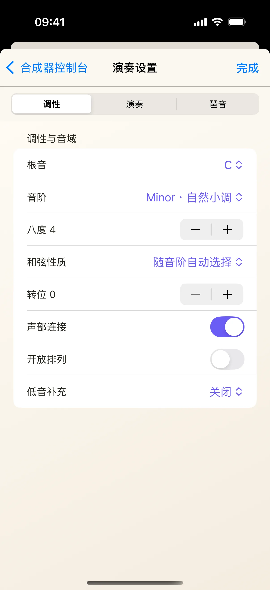
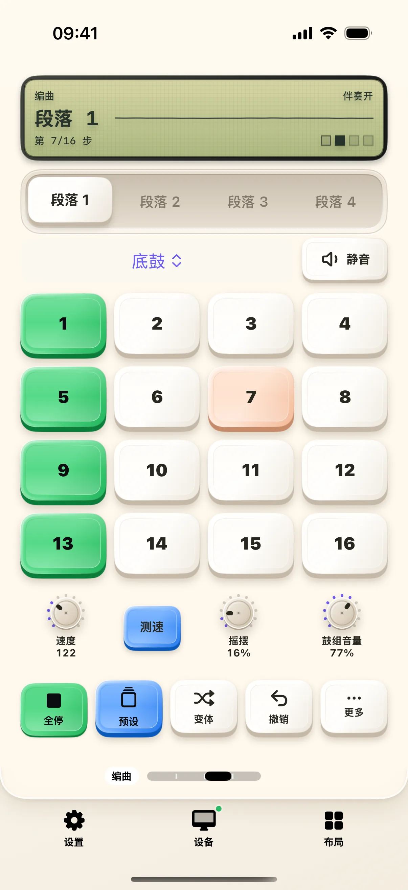
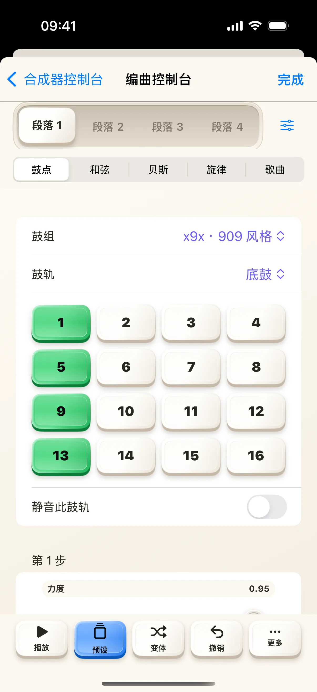

不必先连接电脑，也不必先学会整套编曲工具。打开合成器，按下一枚和弦键就可以开始。这篇先带你听清楚一个和弦，再切到编曲桌面，试一段鼓点；每一步都能在手机上检查结果。
开始前
- 更新到奶猫妙控 1.3.0，打开声音并从较低音量开始。
- 从底部「布局」中选择「合成器」，先进入「和弦」桌面。
- 这次练习使用手机本地音源；Mac MIDI 输出可以之后再配置。
1. 先按一枚和弦键
和弦桌面有七枚带数字的按键，上排为 2、4、6，下排为 1、3、5、7。先按住 1，再松手，听一次完整的起音和收尾；随后换按 4 或 5，比较听到的变化。
上方小屏显示当前调性、和弦和状态。数字表示调性中的级数，不能把 1 固定理解成 C 大三和弦。第一次先保留当前调性，只换按键，比较容易听出差别。
2. 用延音留住一个和弦
点「延音」，再点一次和弦键。现在松手后声音仍可继续，方便腾出手调整其他控件；截图就是启用延音后的状态。
练习结束时再点「延音」关闭。若声音仍在延续，先检查是否还有编曲或循环正在播放。延音控制和弦的保持，播放键还负责其他正在运行的音乐内容。

3. 点小屏，查看当前演奏设置
点上方小屏会打开详细编辑。这里的内容跟随当前桌面和演奏模式；先看清标题与参数，再一次只改一个选项，回到桌面按相同的和弦比较。
看完点右上角「完成」返回。想专门研究音色时，再切到「音色」桌面。不要在还没记住原来声音时同时改动多个旋钮，这样更容易知道哪项调整产生了作用。

4. 切到编曲，生成一段鼓点
用 App 底部的桌面切换条进入「编曲」，也可以从布局列表选择它。合成器的和弦、音色、编曲和循环属于同一套布局，不需要重新创建工程。
点「变体」生成鼓点变化，再点「播放」。步进区会显示当前节奏，播放键变成停止状态。先听一轮再改动，避免把连续点按产生的几个版本混在一起。

5. 打开编曲编辑，认识不同声部
播放时可以观察节奏；准备详细编辑前先点停止，再点编曲桌面上方小屏。详细编辑按鼓点、和弦、贝斯、旋律和歌曲组织内容，先从鼓点页了解每一步的位置。
这里调整的是工程里的音乐内容。若只是想换声音，回到音色桌面更直接；若要录入自己的演奏，继续使用循环桌面。先把一条鼓点听顺，再逐渐加入其他声部。

6. 把这一轮练习停下来
点「完成」回到桌面，确认播放键回到播放状态，再关闭延音。这样可以区分参数变化、持续和弦和循环播放各自的作用。
接下来可以尝试循环桌面的录制、叠录和撤销，或从更多操作中保存、导出工程。这些会涉及自己的音乐内容，建议先保存一份练习工程，再继续修改。当前教程的目标是完成一次和弦与鼓点的本地试听。
常见问题
按键没有声音，先检查什么？
先检查手机音量和当前音频输出设备，再确认没有停留在错误提示或导出弹窗中。手机本地发声不需要 Mac 配对；选择外部 MIDI 后，应分别检查本地声音和外部目标的设置。
切到其他桌面后是不是另一首曲子？
合成器的四个桌面从不同角度操作同一份工程。换桌面不等于新建工程，也不必重复导入声音。
可以直接当 Mac 上的乐器插件吗？
它可以发送 MIDI，但手机上的本地音源与 Mac 软件中的乐器是不同的输出路径。需要电脑发声时，应先连接 Mac、选择 MIDI 目标，并在接收软件中配置输入。
本文按奶猫妙控 1.3.0 的界面与操作编写，更新于 2026 年 9 月 11 日。查看更新日志 · 连接与权限帮助。